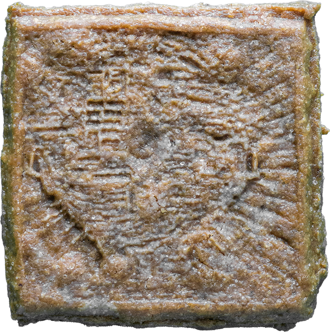
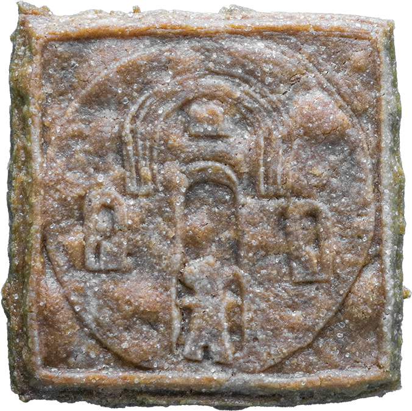
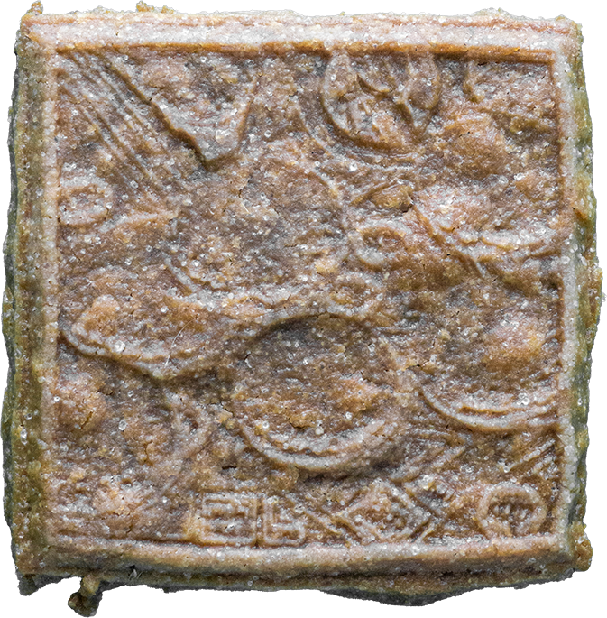

1. Speculating (Creative Workers and Generative AI Unionization)2. Speculating (Recognition of AI Companions Beyond Anthropomorphism)3. Speculating (a Mutual Relationship Between AI and Creative Workers Maintained Through Facilitation, Mediation, Negotiation, Solidarity, and Care)4. Speculating (Speculation as an Accountable Gesture of Unionization)5. Speculating (Generative AI with Labor Ethics)6. Speculating (Decoupling Creative Labor from Algorithmic Culture)7. Speculating (Collaboration Between AI and Creative Workers That Doesn't Exploit Either Side)8. Speculating (Generative AI for Reduced Precarity, Not Increased Productivity)9. Speculating (The History Where the Technologies of Automation – Linotype, Personal Computers, and Generative AI – Didn't Dissolve the International Typographical Union)

10. Speculating (Unionized Creative Workers' Movement Impacting the Critical Point of the Complex Apparatus of Generative AI)

11. Speculating (Speculation Deviating from the Exploitative History of Speculation Congealed in Speculoos Biscuits)

12. Speculating (Raising $1.01 Million Fund – 1% of What Stable Diffusion Received – by Selling AI-Generated Speculoos Biscuits)